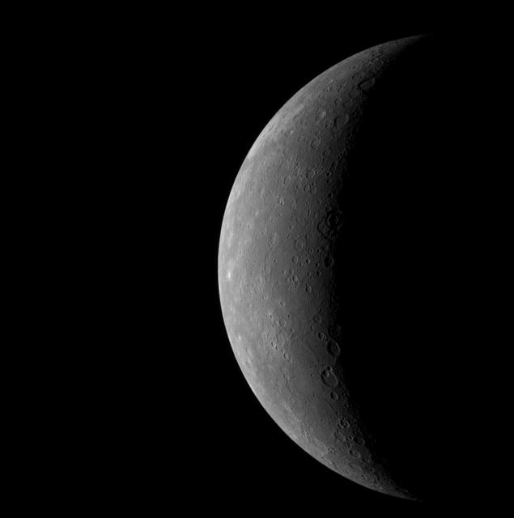

Mercury
Mercury is the smallest planet in the solar system and the one closest to the Sun. It is only slightly larger than Earth's Moon.
Even though it is nearest the Sun, Mercury is not the hottest planet. It has almost no atmosphere to trap heat, so daytime surface temperatures reach about 430 °C while nights fall to about −180 °C.

Surface and Atmosphere
Mercury's gray surface is covered in craters from billions of years of impacts, much like the Moon's. The Caloris Basin, a crater roughly 1,550 kilometers wide, is one of the largest in the solar system.
Mercury has no true atmosphere, only a thin exosphere of atoms knocked off its surface. Still, spacecraft have found evidence of water ice inside permanently shadowed craters near the poles, where sunlight never reaches.
Orbit and Rotation
Mercury circles the Sun every 88 Earth days, faster than any other planet. It spins slowly, taking about 59 Earth days to turn once on its axis.
Together, those two motions make one solar day, from one sunrise to the next, last about 176 Earth days. That is twice as long as a Mercury year.
Exploration
NASA's Mariner 10 flew past Mercury three times in 1974 and 1975. NASA's MESSENGER became the first spacecraft to orbit the planet in 2011, mapped its entire surface, and ended its mission in 2015.
A joint European and Japanese mission, BepiColombo, is scheduled to enter orbit around Mercury in late November 2026.